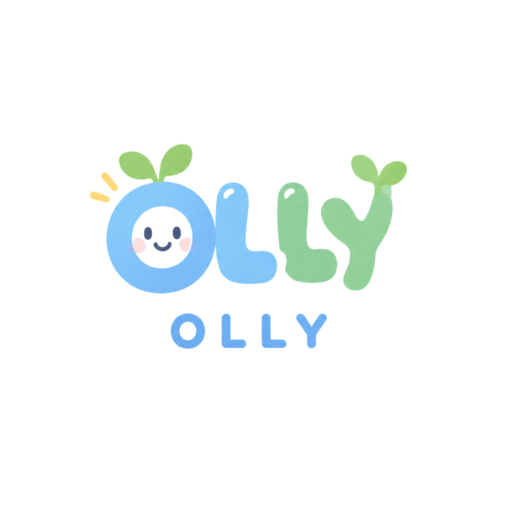

올리 OLLY
학급 성찰문 작성과 자기평가, 생활지도 기록을 함께 관리하는 공간이에요.
🧒
학생 접속
출석번호와 4자리 접속 코드로 성찰문과 자기평가를 작성해요.
🍎
교사 접속
비밀번호 로그인 후 학급 기록 관리와 생기부 초안을 작성해요.

학급 성찰문 작성과 자기평가, 생활지도 기록을 함께 관리하는 공간이에요.
출석번호와 4자리 접속 코드로 성찰문과 자기평가를 작성해요.
비밀번호 로그인 후 학급 기록 관리와 생기부 초안을 작성해요.
자신의 출석번호를 누른 후, 선생님께 부여받은 4자리 코드를 입력합니다.
발급받은 4자리 접속 코드를 입력해 주세요.
자신의 행동을 차분히 되돌아보거나, 나의 장점과 다짐을 기록해보세요.
친구와의 다툼이나 규칙을 어겼을 때, 상황을 육하원칙으로 정리하고 내 마음을 진솔하게 돌아봅니다.
작성하기 →나의 장점과 더 노력하고 싶은 점을 키워드와 구체적인 사례를 통해 스스로 정리합니다.
내가 지금까지 제출한 성찰문과 자기평가 내역, 선생님의 코멘트를 확인합니다.
기록 열람 →작성하고자 하는 상황에 알맞은 유형을 선택합니다.
급우와 의견 차이, 말다툼, 신체적 다툼 등 상호 갈등 사안이 발생했을 때
수업 태도 미흡, 기물 부주의, 과제 미이행 등 스스로의 규칙 위반 사안일 때
자신에게 해당하는 키워드를 선택하고, 실제 학교생활 속 구체적인 사례를 적어보세요.
제출한 성찰문과 선생님의 지도 피드백을 확인할 수 있습니다.
학급 생활지도 기록 및 행발 초안 생성 대시보드
성찰문 0건 · 자기평가 미제출
초안을 검토 후 직접 수정하거나 생활기록부 나이스(NEIS)에 바로 복사하세요.
학생들이 접속할 때 출석번호와 함께 입력할 4자리 코드입니다. 인쇄하거나 학생별로 안내해 주세요.
| 출석번호 | 가상 이메일 (Auth) | 4자리 접속 코드 |
|---|
학생에게 보이는 성찰문 질문, 입력창 안내 문구, 예시 문장, 최소 작성 글자 수를 유형별로 직접 수정할 수 있습니다. 저장 후 학생이 성찰문 작성 화면을 열면 새 문구가 적용됩니다.